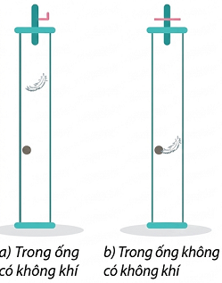
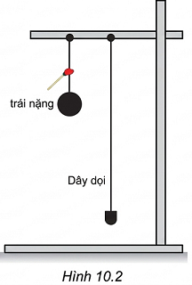
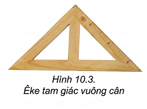

"Năm 1971, nhà du hành vũ trụ người Mỹ David Scott đã đồng thời thả rơi trên Mặt Trăng một chiếc lông chim và một chiếc búa ở cùng một độ cao và nhận thấy cả hai đều rơi xuống như nhau. Em có suy nghĩ gì về hiện tượng này?"
Sự rơi của các vật trong không khí là chuyển động thường gặp. Ai cũng thấy hòn đá rơi nhanh hơn viên phấn, viên phấn rơi nhanh hơn chiếc lông chim. Vậy rơi nhanh hay chậm có phải do vật nặng hay nhẹ?
✋ Hoạt động: Các thí nghiệm kiểm tra sự rơi trong không khí
Nhận xét:
Sự rơi nhanh hay chậm của vật phụ thuộc vào độ lớn của lực cản không khí tác dụng lên vật. Lực cản càng nhỏ so với trọng lực tác dụng lên vật thì vật sẽ rơi càng nhanh và ngược lại.
? Trả lời các câu hỏi sau từ thí nghiệm:
? Theo em nếu loại bỏ được sức cản của không khí, các vật sẽ rơi như thế nào?
Trong chân không (không có lực cản không khí), mọi vật đều rơi nhanh như nhau. Điều này đã được chứng minh qua thí nghiệm với ống hút chân không của Newton.

Hình 10.1. Thí nghiệm về sự rơi tự do
Định nghĩa:
Sự rơi tự do là sự rơi chỉ dưới tác dụng của trọng lực.
📌 LƯU Ý:
Nếu vật rơi trong không khí mà độ lớn của lực cản không khí không đáng kể so với trọng lượng của vật thì cũng coi là rơi tự do.
Vì trọng lực có phương thẳng đứng, chiều từ trên xuống nên sự rơi tự do có phương thẳng đứng, chiều từ trên xuống.

Hình 10.2

Hình 10.3. Êke tam giác vuông cân và dây dọi
? Yêu cầu thí nghiệm:
Chuyển động rơi tự do là chuyển động thẳng nhanh dần đều.
Bảng 10.1. Quãng đường vật rơi tự do theo thời gian
| Thời gian rơi \(t\) (s) | Quãng đường rơi \(s\) (m) |
|---|---|
| 0,1 | 0,049 |
| 0,2 | 0,197 |
| 0,3 | 0,441 |
| 0,4 | 0,785 |
| 0,5 | 1,227 |
? Căn cứ vào số liệu bảng 10.1:
Sử dụng công thức \( s = \frac{1}{2}at^2 \Rightarrow a = \frac{2s}{t^2} \)
- Tại t=0.1s: \(a = 2*0.049 / 0.1^2 = 9.8\)
- Tại t=0.2s: \(a = 2*0.197 / 0.2^2 = 9.85\)
Do a gần như không đổi \(\approx 9.8 \text{ m/s}^2\) nên đây là chuyển động nhanh dần đều.
? Trong các chuyển động sau, đâu là rơi tự do?
Đáp án C. Quả tạ rơi có trọng lượng rất lớn so với lực cản của không khí, nên lực cản có thể bỏ qua, chuyển động coi như rơi tự do.
Ở cùng một nơi trên Trái Đất, mọi vật rơi tự do với cùng một gia tốc \(g\).
Ở gần bề mặt Trái Đất người ta thường lấy giá trị của \(g \approx 9,8 \text{ m/s}^2\).
Chọn thời điểm ban đầu \(t_0 = 0\).
? Câu hỏi vận dụng:
Một người thả một hòn bi từ trên cao xuống đất và đo được thời gian rơi là 3,1 s. Bỏ qua sức cản không khí. Lấy \(g = 9,8 \text{ m/s}^2\).
a) Tính độ cao của nơi thả hòn bi so với mặt đất và vận tốc lúc chạm đất.
b) Tính quãng đường rơi được trong 0,5 s cuối trước khi chạm đất.
Lời giải:
a) Độ cao thả hòn bi:
\( h = s = \frac{1}{2}gt^2 = \frac{1}{2} \times 9,8 \times (3,1)^2 \approx 47,089 \text{ (m)} \)
Vận tốc lúc chạm đất:
\( v = gt = 9,8 \times 3,1 = 30,38 \text{ (m/s)} \)
b) Quãng đường rơi trong 0,5s cuối = (Quãng đường rơi trong 3,1s) - (Quãng đường rơi trong 2,6s đầu).
Quãng đường rơi trong 2,6s đầu là:
\( s' = \frac{1}{2}gt'^2 = \frac{1}{2} \times 9,8 \times (3,1 - 0,5)^2 = \frac{1}{2} \times 9,8 \times (2,6)^2 = 33,124 \text{ (m)} \)
Quãng đường 0,5s cuối: \(\Delta s = h - s' = 47,089 - 33,124 = 13,965 \text{ (m)}\)
Vận dụng được những kiến thức về sự rơi tự do vào một số tình huống thực tế đơn giản.
Biết cách xác định phương thẳng đứng (dùng dây dọi) và phương nằm ngang (dùng êke, ống nivo).
Bài 1: Thả một vật rơi tự do từ độ cao 20m xuống đất. Lấy \(g = 10 \text{ m/s}^2\). Tính thời gian vật rơi để chạm đất.
Từ công thức: \( h = \frac{1}{2}gt^2 \Rightarrow t = \sqrt{\frac{2h}{g}} \)
Thay số: \( t = \sqrt{\frac{2 \times 20}{10}} = \sqrt{4} = 2 \text{ (s)} \)
Bài 2: Một vật rơi tự do chạm đất với vận tốc 40 m/s. Lấy \(g = 10 \text{ m/s}^2\). Tính độ cao nơi thả vật.
Từ hệ thức độc lập: \( v^2 = 2gh \Rightarrow h = \frac{v^2}{2g} \)
Thay số: \( h = \frac{40^2}{2 \times 10} = \frac{1600}{20} = 80 \text{ (m)} \)
Bài 3: Một vật rơi tự do, lấy \(g = 10 \text{ m/s}^2\). Tính quãng đường vật rơi được trong giây thứ 3.
Quãng đường đi được sau 3 giây: \( s_3 = \frac{1}{2} \times 10 \times 3^2 = 45 \text{ (m)} \)
Quãng đường đi được sau 2 giây đầu: \( s_2 = \frac{1}{2} \times 10 \times 2^2 = 20 \text{ (m)} \)
Quãng đường trong giây thứ 3: \(\Delta s = s_3 - s_2 = 45 - 20 = 25 \text{ (m)}\)